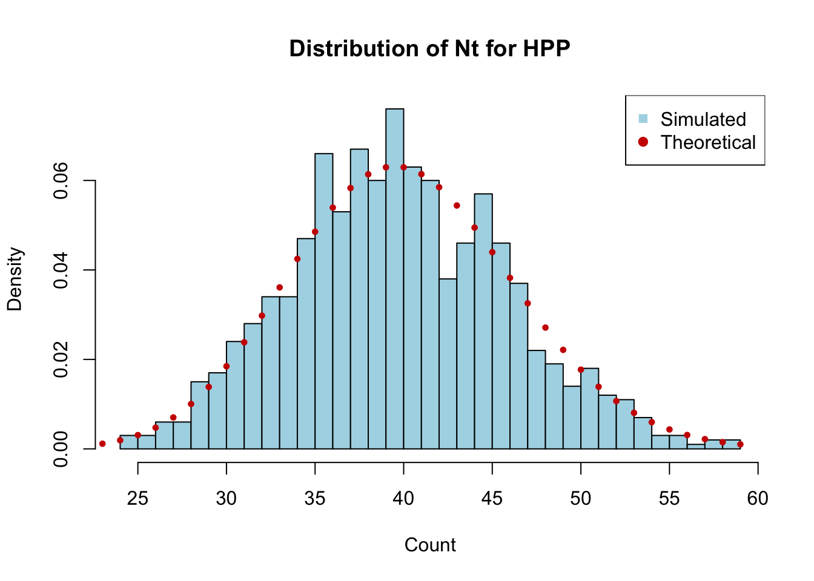
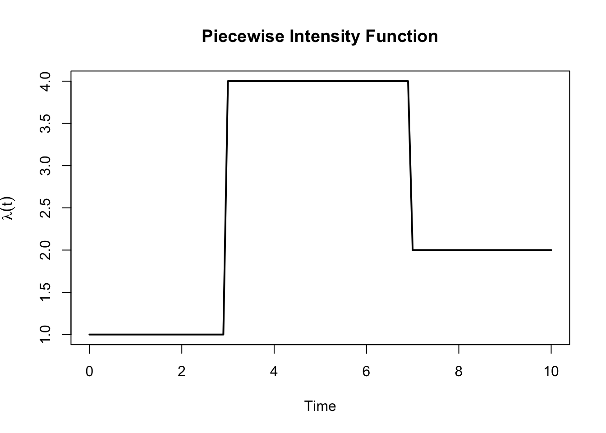

Consider a homogeneous Poisson process with rate \(\lambda = 5\) events per hour.
Simulate the process over a time interval of 8 hours (i.e., from \(t=0\) to \(t=8\)) using the inter-arrival time method. Set seed using set.seed(1234) before simulating the process.
simulate_hpp <-function(lambda, T_max) { t <-0 times <-c()while (TRUE) { t <- t +rexp(1, lambda)if (t > T_max) break times <-c(times, t) } times}set.seed(1234)event_times_hpp <-simulate_hpp(lambda =5, T_max =8)round(event_times_hpp, 2)
Calculate the average number of events per hour from your simulation and compare it to the theoretical rate \(\lambda\).
length(event_times_hpp) /8
[1] 5.125
The average number of events per hour from the simulation is 5.125, which is close to the theoretical rate of 5 events per hour.
Repeat the simulation 1000 times and plot the distribution of the total number of events in 8 hours. Does it match the expected Poisson distribution with mean \(\lambda \times T\)?
total_events <-replicate(1000, length(simulate_hpp(lambda =5, T_max =8)))# Plot histogram of total eventshist(total_events, breaks =30, probability =TRUE,main ="Distribution of Nt for HPP",xlab ="Count", col ="lightblue")x_vals <-0:max(total_events)# Theoretical Poisson distribution with mean lambda * T_maxpoints(x_vals, dpois(x_vals, 5*8), pch =19, cex =0.6, col ="red3")legend("topright", legend =c("Simulated", "Theoretical"),col =c("lightblue", "red3"), pch =c(15, 19))

The histogram of the total number of events in 8 hours should closely match the theoretical Poisson distribution with mean \(\lambda \times T = 5 \times 8 = 40\).
Calculate the empirical probability of observing exactly 40 events in 8 hours and compare it to the theoretical probability from the Poisson distribution
Calculate the empirical probability of observing more than 50 events in 8 hours and compare it to the theoretical probability from the Poisson distribution.
For part (e) and (f), the empirical probabilities should be reasonably close to the theoretical probabilities from the Poisson distribution, especially as the number of simulations increases. The differences can be attributed to random variation in the simulations.
Exercise 2: Simulating a NHPP with a piecewise intensity function
A non-homogeneous Poisson process has an intensity function that varies over time. Consider the following piecewise intensity function:
Plot the intensity function \(\lambda(t)\) over the time interval \([0, 10]\).
lambda_fun <-function(t) {ifelse(t <3, 1,ifelse(t <7, 4, 2))}curve(lambda_fun(x), from =0, to =10, lwd =2,xlab ="Time", ylab =expression(lambda(t)),main ="Piecewise Intensity Function")

Use the thinning algorithm to simulate a NHPP with this intensity function over the time interval \([0, 10]\). Set seed using set.seed(1234) before simulating the process.
simulate_nhpp_thinning <-function(lambda_fun, lambda_max, T_max) { t <-0 times <-c()while (TRUE) { t <- t +rexp(1, lambda_max)if (t > T_max) breakif (runif(1) <=lambda_fun(t) / lambda_max) { times <-c(times, t) } } times}lambda_max <-4T_max <-10set.seed(1234)event_times_nhpp <-simulate_nhpp_thinning(lambda_fun, lambda_max, T_max)event_times_nhpp
Report the number of events that occurred in the simulated NHPP. Compare it to the expected number of events.
# simulated number of eventslength(event_times_nhpp)
[1] 29
# expected number of eventsexpected_events <-integrate(lambda_fun, lower =0, upper = T_max)$valueexpected_events
[1] 25
The expected number of events can be calculated by integrating the intensity function over the time interval. For a step function like this, we can calculate it as:
The simulated number of events should be reasonably close to this expected value, although some variation is expected due to randomness in the simulation.
Plot the cumulative count of events over time, i.e., plot \(N(t)\) against \(t.\)
Do you think the thinning algorithm is efficient for simulating this NHPP? Why or why not?
The efficiency of the thinning algorithm depends on how closely the maximum intensity \(\lambda_{max}\) matches the actual intensity function \(\lambda(t)\). In this case, since \(\lambda(t)\) takes values of 1, 4, and 2, and we set \(\lambda_{max} = 4\), the algorithm will be more efficient during the time intervals where \(\lambda(t)\) is close to 4 (i.e., between 3 and 7). However, during the intervals where \(\lambda(t)\) is much lower (i.e., between 0 and 3, and between 7 and 10), many proposed events will be rejected, which can lead to inefficiency. If the intensity function had a smaller maximum value or if we could use a piecewise constant upper bound that better matches the intensity function, the algorithm would be more efficient.
We can calculate the acceptance rate of the thinning algorithm to quantify its efficiency:
This means that approximately 62.5% of the proposed events are accepted, which is a reasonable acceptance rate. However, if the maximum intensity were much higher than the average intensity, the acceptance rate would drop, making the algorithm less efficient.
Exercise 3: Simulating M/M/\(c\) (Extended)
Consider the M/M/2 queueing system of the EV charging station dicussed in 🚗 EV Charging Bays Simulation with the following parameters:
initial state (number of customers) \(X_0 = 0\).
arrival rate \(\lambda = 3\)
service rate \(\mu = 2\) per server
a total simulation time of 720 hours (60 working days for 12 hours per day).
simulate_mmc <-function(lambda, mu, c, sim_time, seed=1234) {if (!is.null(seed)) set.seed(seed)# System state T <-0 X <-0# Output dataframe df <-data.frame(time =0,state =0,event ="Start",server =NA,start =NA,end =NA )# Next arrival T_a <-rexp(1, lambda)# Active services: one row per busy server services <-data.frame(server =integer(0),start =numeric(0),end =numeric(0) )while (T < sim_time) { T_s <-if (nrow(services) >0) min(services$end) elseInfif (min(T_a, T_s) > sim_time) breakif (T_a < T_s) {# Arrival T <- T_a X <- X +1 df <-rbind( df,data.frame(time = T, state = X, event ="Arrival",server =NA, start =NA, end =NA ) ) T_a <- T +rexp(1, lambda)# Start service immediately if a server is freeif (X <= c) { busy <- services$server idle <-setdiff(seq_len(c), busy) srv <-sample(idle, 1) # assign to a random free server dur <-rexp(1, mu) services <-rbind( services,data.frame(server = srv,start = T,end = T + dur ) ) } } else {# Departure idx <-which.min(services$end) srv <- services$server[idx] s0 <- services$start[idx] s1 <- services$end[idx] T <- s1 X <- X -1 df <-rbind( df,data.frame(time = T, state = X, event ="Departure",server = srv, start = s0, end = s1 ) )# Remove completed service services <- services[-idx, ]# If queue non‑empty, same server starts next service immediatelyif (X >= c) { dur <-rexp(1, mu) services <-rbind( services,data.frame(server = srv,start = T,end = T + dur ) ) } } }rownames(df) <-NULL df}
Conduct a comparative analysis if EV adoption increases, i.e., re-run the simulation with \(\lambda = 3.5\) cars/hour. How do the average waiting time (\(W_q\)) and utilisation (\(\rho\)) change?
# Erlang-C formula for M/M/c probability of waitingerlang_c <-function(lambda, mu, c) { a <- lambda / mu rho <- lambda / (c * mu)if (rho >=1) {return(1) # System is unstable, all arrivals will wait } sum_terms <-sum(sapply(0:(c-1), function(k) a^k /factorial(k))) top <- (a^c /factorial(c)) * (1/ (1- rho)) P_wait <- top / (sum_terms + top)return(P_wait)}# Calculate P0 for M/M/cP0_mmc <-function(lambda, mu, c) { a <- lambda / mu rho <- lambda / (c * mu) sum_terms <-sum(sapply(0:(c-1), function(k) a^k /factorial(k))) top <- (a^c /factorial(c)) * (1/ (1- rho)) P0 <-1/ (sum_terms + top)return(P0)}mmc_metrics <-function(lambda, mu, c, sim_time) { df <-simulate_mmc(lambda, mu, c, sim_time) durations <-diff(df$time) states <- df$state[-nrow(df)]# Empirical performance metrics rho_hat <-sum((states >0) * durations) /sum(durations) L_hat <-sum(states * durations) /sum(durations) Lq_hat <- L_hat - rho_hat W_hat <- L_hat / lambda Wq_hat <- W_hat -1/ mu P0_hat <-sum((states ==0) * durations) /sum(durations)# Theoretical performance metrics P_wait <-erlang_c(lambda, mu, c) rho <- lambda / (c*mu) Lq_theory <- P_wait * (rho / (1- rho)) L_theory <- Lq_theory + (lambda / mu) Wq_theory <- Lq_theory / lambda W_theory <- Wq_theory + (1/ mu) P0_theory <-P0_mmc(lambda, mu, c)data.frame(Simulated =c(lambda, mu, c, round(P_wait, 3), round(rho_hat, 3),round(L_hat, 3), round(Lq_hat, 3),round(W_hat, 3), round(Wq_hat, 3), round(P0_hat, 3)),Theoretical =c(lambda, mu, c, round(P_wait, 3), round(rho, 3), round(L_theory, 3), round(Lq_theory, 3),round(W_theory, 3), round(Wq_theory, 3), round(P0_theory, 3)) )}results <-data.frame(Metric =c("lambda", "mu", "c", "P_wait", "Utilisation","Avg. number in system", "Avg. number in queue","Avg. response time", "Avg. waiting time", "P(system empty)"))lambda_values <-c(3, 3.5)results <-cbind(results, lapply(lambda_values, function(lam) mmc_metrics(lam, mu =2, c =2, sim_time =720)))library(knitr)kable(results)
Metric
Simulated
Theoretical
Simulated
Theoretical
lambda
3.000
3.000
3.500
3.500
mu
2.000
2.000
2.000
2.000
c
2.000
2.000
2.000
2.000
P_wait
0.643
0.643
0.817
0.817
Utilisation
0.851
0.750
0.913
0.875
Avg. number in system
3.304
3.429
5.572
7.467
Avg. number in queue
2.453
1.929
4.659
5.717
Avg. response time
1.101
1.143
1.592
2.133
Avg. waiting time
0.601
0.643
1.092
1.633
P(system empty)
0.149
0.143
0.087
0.067
Note that the difference between the simulated and theoretical metrics can be attributed to random variation in the simulation, especially for metrics that depend on the tail of the distribution (e.g., probability of waiting). Let’s discuss the theoretical changes in average waiting time and utilisation when \(\lambda\) increases from 3 to 3.5:
Utilisation increases from 0.75 to 0.875. This means that the EV charging stations will be busier on average, and there will be less idle time. A utilisation of 0.875 indicates that the system is highly utilised and is approaching its capacity, which can lead to congestion and longer waiting times.
As utilisation increases, the average waiting time will also increase from 0.643 hours (38.6 minutes) to 1.633 hours (1 hour and 38 minutes).
What if charging is slower in winter? Increase the mean charging time to 37.5 minutes (i.e., \(\mu = 1.6\)). How does this affect utilisation and waiting?
results2 <-data.frame(Metric =c("lambda", "mu", "c", "P_wait", "Utilisation","Avg. number in system", "Avg. number in queue","Avg. response time", "Avg. waiting time", "P(system empty)"))mu_values <-c(2, 1.6)results2 <-cbind(results2, lapply(mu_values, function(mu) mmc_metrics(lambda =3, mu, c =2, sim_time =720)))library(knitr)kable(results2)
Metric
Simulated
Theoretical
Simulated
Theoretical
lambda
3.000
3.000
3.000
3.000
mu
2.000
2.000
1.600
1.600
c
2.000
2.000
2.000
2.000
P_wait
0.643
0.643
0.907
0.907
Utilisation
0.851
0.750
0.969
0.938
Avg. number in system
3.304
3.429
14.460
15.484
Avg. number in queue
2.453
1.929
13.492
13.609
Avg. response time
1.101
1.143
4.820
5.161
Avg. waiting time
0.601
0.643
4.195
4.536
P(system empty)
0.149
0.143
0.031
0.032
Utilisation (\(\rho\)) increases from 0.75 to 0.9375, which indicates that the system is even more heavily utilised and is very close to its capacity.
Average waiting time (\(W_q\)) increases significantly from 0.643 hours (38.6 minutes) to 4.536 hours (4 hours and 32 minutes). This dramatic increase in waiting time is due to the fact that the service rate has decreased, leading to longer service times and more congestion in the system.
The university is planning to add more chargers to the station as the analysis (from part (a) and (b)) shows that the current system will be heavily utilised if the arrival rate increases or if the service rate decreases only by just a little. Suppose that in the next couple years the arrival rate is expected to increase to 4 cars/hour and the mean charging time during winter is 37.5 minutes (i.e., \(\mu = 1.6\)), how many chargers should the university plan to install?